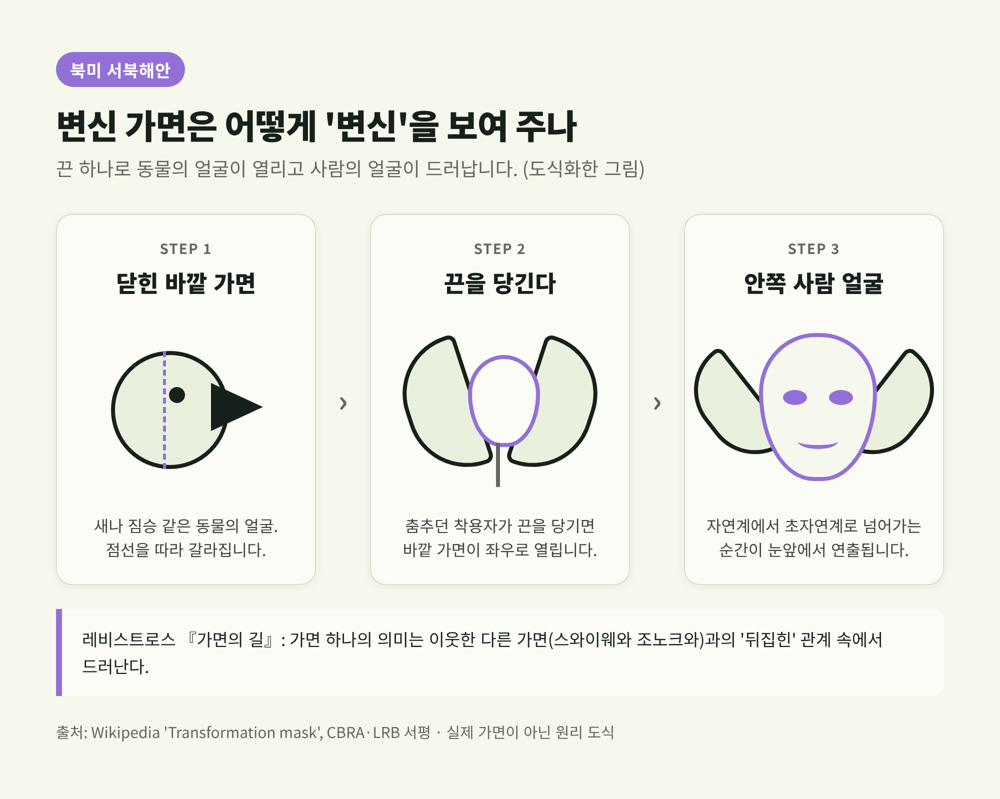

가면의 비교종교학 — 탈을 쓰면 왜 사람이 신과 조상이 되었을까
이번 글에서는 가면을 비교종교학의 눈으로 살펴보려 합니다. 안동 하회마을의 탈부터 티베트 사원의 참 무용, 일본의 노가쿠, 요루바의 에군군, 북미 서북해안의 변신 가면까지 함께 놓고 봅니다. 서로 만난 적 없는 전통들이 왜 하나같이 얼굴을 가려 신과 조상을 불러왔는지, 그 공통 구조와 차이를 정리해 보겠습니다.
먼저 요약부터 드리겠습니다. 여러 전통에서 가면은 대체로 네 가지 일을 합니다. 보이지 않는 존재를 눈앞에 세우고, 죽은 이를 산 자 곁으로 데려오고, 나쁜 기운을 쫓고, 착용자 개인을 지워 공동체의 목소리를 내게 합니다.
■ 9,000년 전의 얼굴 — 가면은 언제부터 성스러웠나
가면의 역사는 생각보다 깁니다. 2014년 이스라엘 박물관은 약 9,000년 전 신석기 시대의 석제 가면 12점을 한자리에 모았습니다. 유대 구릉과 유대 사막 가장자리, 나할 헤마르 동굴 같은 곳에서 나온 석회암·백악 가면들입니다.
큐레이터 데비 허시먼은 이 가면들이 "특정 인물의 초상, 아마도 중요한 조상"일 수 있다고 보았습니다. 조상 숭배 의례에서 썼을 가능성이 있다는 해석입니다. 물론 문자 기록이 없는 시대라 단정할 수는 없습니다. 다만 인류가 꽤 이른 시기부터 얼굴을 깎아 죽은 이를 기억했을 가능성은 충분히 열려 있습니다.
브리태니커 백과사전도 가면을 무엇보다 "종교적·사회적 의미를 지닌 의례"와 연결합니다. 장례와 풍요 의례, 병을 고치는 의식에도 가면이 등장합니다. 어떤 의례에서는 가면에 깃든 영에게 직접 선물을 바치기도 합니다.
■ 가면이 하는 네 가지 일
여러 사례를 비교하면 가면의 종교적 기능은 크게 네 갈래로 묶입니다.
첫째, 변신과 현현입니다. 가면을 쓴 사람은 신이나 영을 '연기'하는 데 그치지 않고, 그 존재가 드러나는 통로가 된다고 여겨집니다. 브리태니커는 착용자가 때로 "심리적 변화를 겪고 트랜스처럼 영의 성격을 취한다"고 적습니다. 더 흔하게는 착용자가 몸짓으로 가면에 생명을 불어넣는 동반자 역할을 합니다.
둘째, 조상의 재현입니다. 죽은 이를 산 자 곁에 다시 세우는 일입니다. 요루바의 에군군, 도곤의 장례 가면이 대표적입니다.
셋째, 정화와 벽사입니다. 무서운 얼굴로 나쁜 기운을 쫓는 역할입니다. 하회의 주지 마당, 티베트 참의 분노존 가면이 여기에 속합니다.
넷째, 익명성과 공동체 질서입니다. 얼굴을 지우면 개인의 말이 아니라 전통이나 영의 말이 됩니다. 브리태니커는 여러 문화의 재판관이 가면을 써서 판결의 책임을 전통적으로 인정된 영에게 넘겼다고 설명합니다.
종교학자 미르체아 엘리아데는 평범한 사물을 통해 성스러운 것이 드러나는 사건을 '성현(hierophany)'이라 불렀습니다. 나무 한 조각, 천 몇 겹이 의례 안에서 신의 얼굴이 되는 과정도 이 틀로 읽어볼 수 있습니다.
■ 하회별신굿탈놀이 — 서낭신을 모시는 굿 속의 탈
한국에서 가장 먼저 떠올릴 사례는 안동 하회마을입니다. 하회별신굿탈놀이는 1980년 국가무형유산(옛 중요무형문화재 제69호)으로 지정되었습니다. 한국민족문화대백과는 이 놀이가 서낭제의 탈놀이에서 비롯되었고, 마을 공동 제사인 동제 안에서 전승되었다고 설명합니다. 즉 처음부터 '공연'이 아니라 '굿'의 일부였습니다.
하회마을의 서낭신은 '무진생 서낭님'으로 불립니다. 17세 처녀인 의성 김씨라는 이야기, 15세에 과부가 된 신이라는 이야기가 함께 전합니다. 별신굿은 10년에 한 번, 또는 신의 뜻에 따라 임시로 열렸다고 합니다. 5년이나 10년 주기였다고 전하는 자료도 있어 주기는 함께 적어 둡니다.
절차를 보면 탈과 신앙의 관계가 잘 드러납니다. 섣달보름, 산주가 서낭당에 올라 대를 내려 신의 뜻을 묻습니다. 부정이 없는 목수가 서낭대와 내림대를 만들고, 광대들은 섣달그믐부터 정월대보름까지 합숙합니다. 정월 초이튿날 서낭당에서 신을 내린 뒤에야 비로소 놀이가 시작됩니다.
놀이 마당에도 의례의 흔적이 짙습니다. 사자를 뜻하는 주지 마당은 액을 풀고 잡귀를 쫓는 의식무입니다. 보름날 당제를 지낸 뒤에는 혼례마당과 신방마당이 이어지는데, 이는 처녀신인 서낭신을 위로하고 풍요를 비는 의미라고 합니다. 마지막에는 무당이 허천거리굿을 벌여 잡귀를 몰아냅니다.
특히 눈여겨볼 탈은 각시탈입니다. 각시탈은 서낭신을 대신한다고 여겨져 별신굿 때만 볼 수 있었고, 꺼낼 때마다 산주가 고사를 지냈습니다. 각시 역을 맡은 광대는 무동을 타고 등장하는데, 신이 땅에 닿아서는 안 된다는 설명이 전합니다. 놀이가 끝난 뒤 탈을 태우는 다른 지역과 달리, 하회탈은 서낭당으로 돌려보냈습니다.
탈 자체도 남다릅니다. '안동 하회탈 및 병산탈'은 1964년 국보로 지정되었습니다. 우리 탈은 대개 종이나 바가지로 만들었지만, 하회탈과 병산탈은 오리나무를 깎아 옻칠을 두세 겹 올렸습니다. 하회탈은 주지 두 개를 포함해 10종 11개, 병산탈은 2개가 전합니다. 제작 연대는 확실하지 않으나 고려 시대, 대략 11~12세기로 추정됩니다. 총각·별채·떡다리탈은 있었다고 하나 지금은 전하지 않습니다. 해외 자료에는 '원래 12개 중 9개 현존'으로 적힌 경우도 있어, 세는 방식에 따라 숫자가 다르게 소개되기도 합니다.
턱이 없는 이매탈에는 허도령 전설이 전해집니다. 꿈의 계시를 받아 몰래 탈을 깎던 허도령을 한 여인이 엿보는 바람에 그가 숨졌고, 마지막 이매탈은 턱을 달지 못한 채 남았다는 이야기입니다.
흥미로운 점은 이 성스러운 놀이가 동시에 신랄한 풍자극이라는 사실입니다. 양반과 선비 마당에서 하인 초랭이는 양반을 놀리고, 이매는 '환자(還子)'를 외치며 관리의 착취를 꼬집습니다. 신 앞에서 벌이는 놀이였기에 오히려 평소에는 할 수 없는 말을 할 수 있었던 셈입니다.
2022년 11월 30일, 하회별신굿탈놀이를 포함한 '한국의 탈춤'은 모로코 라바트에서 열린 유네스코 정부간위원회에서 인류무형문화유산 대표목록에 올랐습니다. 한국의 22번째 인류무형문화유산입니다. 유네스코는 탈춤이 사회 위계를 비판하며 "보편적 평등"을 호소한다는 점, 정식 무대 없이 관객과 함께 만든다는 점을 높이 평가했습니다.
■ 티베트의 참, 일본의 노와 가구라 — 수행과 공양으로서의 가면
티베트 불교의 참(Cham)은 승려들이 사원 마당에서 추는 가면 무용입니다. 루빈 미술관은 이 춤이 오락이 아니라 사원 마을을 정화하고 보호하며 악령을 물리치는 의례라고 설명합니다. 무대에는 옛 스승과 성인, 분노한 얼굴의 수호신, 해골 형상이 차례로 등장합니다.
전승에 따르면 삼예 사원을 지을 때 토착 신들이 방해하자, 티송데첸 왕이 파드마삼바바를 초청해 그들을 굴복시켰다고 합니다. 참은 이 이야기를 몸으로 다시 펼치는 의례이기도 합니다. 루빈 미술관 해설은 "춤꾼은 자신이 표현하는 신이 되어야 한다"고 적고, 가면을 예술품이 아닌 "헌신의 대상"으로 소개합니다. 탄트라 수행에서는 명상 속에서 관상한 신의 움직임을 몸으로 구현하는 과정으로 이해합니다. 관객에게는 보는 것만으로 공덕을 얻는 자리가 됩니다.
일본 노가쿠에서도 가면은 특별한 대우를 받습니다. 일본노가쿠협회는 노 가면을 '임시 얼굴'이라는 뜻의 가멘(仮面) 대신 '얼굴'이라는 뜻의 오모테(面)로 부른다고 설명합니다. 감추는 도구가 아니라 진실을 드러내는 얼굴이라는 뜻이 담겨 있다는 것입니다.
가장 의례적인 작품은 『오키나』입니다. "노이면서 노가 아니다"라는 말이 따라붙는 이 작품에는 줄거리가 없습니다. 흰 노인 가면을 쓴 오키나가 천하태평과 장수를 빌 뿐입니다. 공연 전 분장실에서 정화 의식을 치르고, 배우가 무대에 오른 뒤 관객 앞에서 가면을 쓰는 유일한 노 작품이기도 합니다. 사람이 신이 되는 순간을 숨기지 않고 보여주는 셈입니다.
신도의 가구라는 가미에게 바치는 의례 공연입니다. 신을 맞이하고, 즐겁게 하고, 돌려보내는 세 단계로 이루어집니다. 이즈모류 가구라는 가면을 쓰고 신화를 연극으로 펼치며, 사자 가구라에서는 사자 머리 자체가 신이 깃드는 몸(신체)으로 여겨집니다.
■ 에군군과 도곤 — 죽은 이가 돌아오는 얼굴
서아프리카에서는 조상의 귀환이 가면의 중심 주제입니다. 요루바의 에군군은 공동체를 주기적으로 찾아오는 조상들이 눈에 보이게 드러난 모습으로 여겨집니다. 나이지리아 정부 기관의 해설은 에군군을 저승에서 돌아온 죽은 이로 설명하고, 우연히라도 그를 만지면 죽는다는 민간 믿음을 전합니다.
에군군의 의상에는 얼굴이 없습니다. 수의를 닮은 남색·흰색 천으로 몸을 감싸고, 얼굴과 손은 망사로 덮어 착용자가 누구인지 드러나지 않게 합니다. 여러 겹의 천 조각이 회전할 때 펄럭이며 일으키는 바람은 '축복의 바람'으로 불립니다. 브루클린 미술관은 이 의상을 조상령이 머무는 거처이자 "산 자와 저승 사이의 다리"라고 소개합니다.
에군군은 축복만 주지 않습니다. 마임과 춤으로 지난 방문 이후 공동체에서 있었던 옳고 그른 행동을 드러내 보입니다. 조상의 이름으로 공동체를 바로잡는 일종의 도덕적 정화입니다. 얼굴을 지웠기에 가능한 역할입니다.
말리 도곤족의 가면 결사 아와(Awa)는 장례와 애도를 끝내는 의례 '다마'를 주관합니다. 중요한 인물이 세상을 떠나면 고인의 집 지붕 위에서 춤을 추어 영혼을 안식처로 인도하고, 떠도는 영으로부터 산 사람을 지킵니다. 아와가 쓰는 가면은 78종에 이른다고 합니다. 메트로폴리탄 미술관에 따르면 아와는 60년마다 열리는 시기(sigui) 의례를 준비하며 '대가면'을 새로 만듭니다. 이 대가면은 거의 쓰지 않고, 제단처럼 모셔 한 세대의 원로를 기리는 상징이 됩니다.
■ 가면을 쓰는 동안 무슨 일이 일어나는가 — 리미널리티
여러 사례에서 공통으로 보이는 구조가 있습니다. 가면을 쓰기 전과 쓰는 동안, 벗은 뒤가 분명히 나뉜다는 점입니다.
인류학자 아르놀트 반 헤넵은 1909년 『통과의례』에서 의례를 분리, 전이, 통합의 세 단계로 나누었습니다. 빅터 터너는 그중 가운데 단계, 즉 이쪽도 저쪽도 아닌 '문지방' 상태를 리미널리티라 부르며 주목했습니다. 이 상태를 함께 겪는 사람들 사이에는 신분을 넘어선 유대감, 곧 커뮤니타스가 생긴다고 보았습니다.
이 틀로 보면 하회의 합숙과 대내림, 오키나의 분장실 정화는 '분리'에 해당합니다. 가면을 쓴 시간은 신과 조상이 머무는 '전이'의 시간입니다. 그리고 탈을 서낭당에 돌려보내거나 가면을 벗는 순간 '통합'이 이루어집니다. 신분 질서가 잠시 뒤집히는 하회의 양반 풍자도 이 문지방의 시간이었기에 허용되었다고 읽을 수 있습니다.
다만 이 도식이 모든 전통에 똑같이 들어맞는다고 보기는 어렵습니다. 에군군 공동체에게 조상의 귀환은 '상징'이 아니라 실제로 일어나는 일로 받아들여집니다. 비교의 틀은 이해를 돕는 도구일 뿐, 각 전통이 스스로를 설명하는 방식을 대신할 수는 없습니다.
■ 변신 가면과 레비스트로스 — 가면은 다른 가면과 대화한다
북미 서북해안의 변신 가면은 가면이 하는 일을 가장 극적으로 보여줍니다. 바깥은 새나 짐승 같은 동물의 얼굴입니다. 춤꾼이 끈을 당기면 가면이 활짝 열리며 안쪽의 사람 얼굴이 드러납니다. 자연계에서 초자연계로 넘어가는 순간을 눈앞에서 연출하는 장치입니다. 이 가면들은 주로 이름 짓기, 추장 취임, 장례와 혼인을 기념하는 포틀래치에서 씨족의 기원 신화를 펼칠 때 쓰였습니다.

클로드 레비스트로스는 『가면의 길』에서 이 지역 가면을 분석했습니다. 그는 코스트 살리시족의 스와이웨 가면에 있는 튀어나온 눈과 늘어진 혀를 설명하려고, 콰콰카와쿠족의 조노크와 가면과 나란히 놓았습니다. 두 가면의 특징이 거의 정반대로 뒤집혀 있다는 것, 그리고 포틀래치의 귀중품인 구리판과도 구조적으로 이어진다는 것이 그의 주장입니다. 가면 하나의 의미는 그 가면만 들여다봐서는 알 수 없고, 이웃한 가면들과의 관계 속에서 드러난다는 관점입니다.
비판도 있습니다. 한 서평자는 만든 사람의 손을 떠나 독립된 삶을 사는 사물을 구전 신화처럼 다룰 수 있는지, 그리고 가면이 실제로 쓰이는 의례를 거의 다루지 않았다는 점을 문제 삼았습니다.
이 지역 가면의 역사에는 아픈 대목도 있습니다. 캐나다 정부는 1885년부터 인디언법으로 포틀래치를 금지했고, 이 조항은 1951년에야 삭제되었습니다. 1921년 성탄절, 댄 크랜머가 연 포틀래치에서는 45명이 체포되었고 그중 20명이 2~3개월간 수감되었습니다. 의례용품을 넘기는 조건으로 형을 면한 사람들도 있었습니다. 캐나다 백과사전은 이때 압수된 물품을 약 600점으로 추산합니다. 상당수는 오타와와 토론토, 뉴욕의 박물관으로 흩어졌고, 일부는 수집가에게 팔렸습니다.
콰콰카와쿠 사람들은 1970년대부터 반환 운동을 벌였습니다. 1988년 로열 온타리오 박물관이 소장분을 돌려주었고, 미국 스미스소니언 국립아메리칸인디언박물관도 2002년 16점을 반환했습니다. 아직 행방을 모르거나 협상 중인 물건도 남아 있습니다. 박물관 진열장 속 가면이 원래는 누군가의 조상을 부르던 살아 있는 의례 도구였다는 사실을 함께 기억할 필요가 있습니다.
■ 디오니소스의 가면과 페르소나, 그리고 베네치아
서양 연극의 가면도 종교 의례와 깊이 얽혀 있습니다. 고대 그리스에서는 레나이아, 안테스테리아, 도시 디오니시아 같은 디오니소스 축제에서 가면을 통한 변장과 변신이 이루어졌습니다. 레나이아 관련 도기화에는 기둥에 걸린 가면이 의례의 중심을 차지하는 장면이 그려져 있습니다. 아리스토텔레스는 『시학』에서 비극이 디오니소스 찬가인 디튀람보스에서 시작되었다고 보았습니다.
그렇다고 비극 가면이 의례에서 곧장 태어났다고 단정하기는 어렵습니다. 하버드 그리스연구센터에 실린 연구는 증거가 단편적이라는 점을 지적하며, 극 가면이 오랜 진화 과정을 거쳐 굳어졌다고 봅니다. 의례 직접 기원설과 점진적 진화설이 함께 논의되는 셈입니다.
'인격(person)'의 어원인 라틴어 페르소나(persona)도 논쟁적입니다. '소리가 울려 나오다(per-sonare)'에서 왔다는 설명이 널리 퍼져 있지만, 모음 길이가 맞지 않는다는 문제가 지적됩니다. 에트루리아어로 가면을 뜻하는 '페르수(phersu)'에서 빌려 왔다는 설도 있습니다. 어느 쪽이든, 서양에서 '사람'을 가리키는 말이 가면과 얽혀 있을지 모른다는 점은 흥미롭습니다.
베네치아 카니발은 가면이 신성에서 세속으로 옮겨 간 사례입니다. 카니발은 사순절이 시작되는 재의 수요일 전날 끝나는 축제로, 종교력 안에 자리합니다. 그러나 이곳의 가면은 신이 아니라 익명의 시민을 불러냈습니다. 카니발 기간에는 신분과 직업에 따른 복장 규정이 정지되었고, 흰 바우타 가면은 남성 시민이 익명의 평등한 존재로 정치적 결정에 참여하는 데 쓰였습니다. 1339년의 법은 가면을 쓰고 수녀원에 드나드는 일 등을 금지할 만큼 가면이 일상 깊숙이 들어와 있었습니다. 1797년 금지된 축제는 1979년 이탈리아 정부의 주도로 되살아났고, 지금은 해마다 수백만 명이 찾는 관광 축제가 되었습니다.
■ 예전엔 신의 얼굴, 지금은 무대의 얼굴?
예전에 하회탈은 별신굿 때만 꺼내 볼 수 있는 신의 얼굴이었습니다. 지금은 상설 공연과 축제 무대에서 누구나 만날 수 있습니다. 얼핏 세속화로만 보이지만, 그렇게 단순하지는 않습니다.
유네스코가 주목한 것은 탈춤의 종교성보다 평등과 풍자라는 사회적 가치였습니다. 반대로 티베트의 참이나 요루바의 에군군은 오늘날에도 살아 있는 신앙 실천입니다. 같은 '가면'이라도 공동체마다 성과 속의 비율은 다르고, 한 전통 안에서도 시대에 따라 달라집니다.
비교종교학의 접근에는 분명한 장점이 있습니다. 서로 다른 전통에서 비슷한 구조를 찾아내 인간의 종교적 상상력을 넓게 보여줍니다. 한계도 분명합니다. 네 가지 기능이나 리미널리티 같은 틀은 바깥에서 붙인 이름이라, 각 공동체가 경험하는 신과 조상의 실재감을 다 담지는 못합니다.
정리하면 이렇습니다. 가면은 얼굴을 숨기는 도구라기보다 다른 얼굴을 드러내는 장치였습니다. 개인의 얼굴이 사라진 자리에 신과 조상, 그리고 공동체의 목소리가 들어섰습니다.
"얼굴을 가려야 비로소 보이는 존재가 있다" — 수많은 전통이 가면에 걸어 온 믿음은 이 한 문장으로 모을 수 있을 것 같습니다.
박물관에서 낯선 가면 하나를 만나신다면, 그 뒤에 누가 불려 왔는지 한 번쯤 떠올려 보시길 권합니다.
참고자료
- UNESCO — Talchum, mask dance drama in the Republic of Korea
- UNESCO 정부간위원회 결정 17.COM 7.B.22
- 경북매일 — 한국의 탈춤 유네스코 등재(2022.11.30)
- 뉴시스 — 한국 탈춤 22번째 인류무형유산(2022.11.30)
- Korea.net — Talchum named UNESCO heritage
- 한국민족문화대백과 — 하회별신굿탈놀이
- 한국민족문화대백과 — 안동 하회탈 및 병산탈
- 매일신문 — 하회별신굿탈놀이(2022.04.08)
- Wikipedia — Hahoetal
- Britannica — The functions and forms of masks
- Britannica — The wearing of masks
- National Geographic — World's oldest masks (2014)
- Rubin Museum — Cham Dances
- Rubin Project Himalayan Art — Ritual Dance Mask of Guru Dorje Drolo
- Columbia University — Tibetan Ritual Dance
- Wikipedia — Cham dance
- The Nohgaku Performers' Association — Nō masks
- Wikipedia — Okina (Noh)
- Kokugakuin University Encyclopedia of Shinto — Kagura
- Wikipedia — Egungun
- Brooklyn Museum — Egúngún Masquerade Dance Costume
- NICO — Egungun: The Seen Spirits?
- Wikipedia — Awa Society
- The Met — Imina Na (Great Mask)
- Wikipedia — Transformation mask
- The Canadian Encyclopedia — Potlatch Ban
- U'mista Cultural Centre — The History of the Potlatch Collection
- CBRA — Review of The Way of the Masks
- London Review of Books — Review of The Way of the Masks
- Harvard CHS Research Bulletin — The Birth of Tragic Mask through Ritual Practices
- Etymonline — person / persona
- Wikipedia — Carnival of Venice
- Wikipedia — Liminality
- Wikipedia — Hierophany